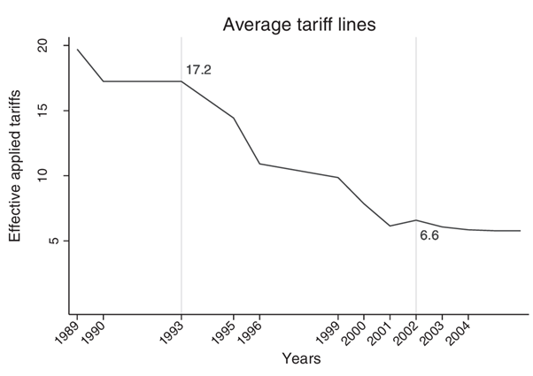
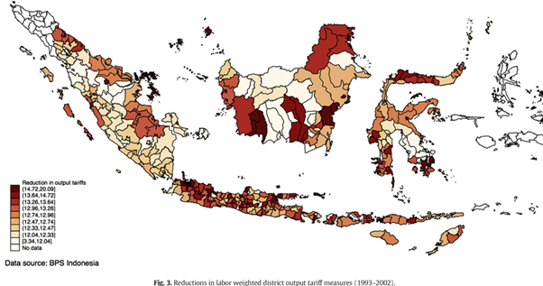
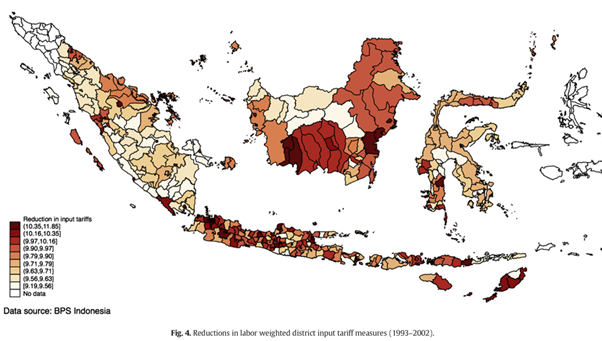

Shift-share IV in trade economics
August 26, 2025
Part I — Why and what (≈45 min)
Part II — Applications and hands-on (≈75 min)
dat.xlsxWe want a local causal effect of a trade shock:
\[ Y_\ell = \alpha + \delta\,X_\ell + \varepsilon_\ell \]
Problem. \(X_\ell\) is endogenous: regions that import more are also regions where productivity, demand, or politics differ in unobserved ways.
→ We need an instrument for \(X_\ell\).
Two ingredients:
Combine into a single regional exposure measure:
\[ Z_\ell \;=\;\sum_k s_{\ell k}\,g_{k} \]
The instrument predicts how hard region \(\ell\) should be hit by a common shock, given its industrial structure.
3 regions × 2 sectors. Tariffs fall between 1987 and 1988.
| region | \(L_{\text{Agri}}\) | \(L_{\text{Manuf}}\) | \(s_{\text{Agri}}\) | \(s_{\text{Manuf}}\) |
|---|---|---|---|---|
| A | 100 | 9 000 | 0.011 | 0.989 |
| B | 1 000 | 400 | 0.714 | 0.286 |
| C | 700 | 3 000 | 0.189 | 0.811 |
National tariff change 1987→1988: Agri 30 → 10, Manuf 20 → 5.
Bartik exposure \(Z_\ell = s_{\ell,\text{Agri}}\Delta\log t_{\text{Agri}} + s_{\ell,\text{Manuf}}\Delta\log t_{\text{Manuf}}\):
| region | \(Z_\ell\) (Δlog) | \(Z_\ell\) (Δlevel) |
|---|---|---|
| A | −1.38 | −15.1 |
| B | −1.18 | −18.6 |
| C | −1.33 | −15.9 |
Note the ranking flips: log change makes A most exposed; level change makes B most exposed.
The Bartik is used as an instrument:
First stage \(\quad X_\ell = \pi_0 + \pi_1 Z_\ell + u_\ell\)
Reduced form \(\quad Y_\ell = \rho_0 + \rho_1 Z_\ell + v_\ell\)
2SLS \(\quad \widehat\delta_{\text{IV}} = \rho_1/\pi_1\)
Goldsmith-Pinkham, Sorkin, and Swift (2020) ask the central question: which assumption makes the Bartik valid?
| Camp | Source of identification | Champion paper |
|---|---|---|
| Share-based | Shares \(s_{\ell k}\) are exogenous to unobservables | Goldsmith-Pinkham, Sorkin & Swift (2020) |
| Shock-based | Shifts \(g_k\) are quasi-randomly assigned | Borusyak, Hull & Jaravel (2022) |
Both deliver consistent IV under different conditions. The right diagnostic depends on which assumption you lean on.
Goldsmith-Pinkham, Sorkin, and Swift (2020) prove: the Bartik 2SLS estimator equals a GMM estimator where each share \(s_{\ell k}\) acts as a separate instrument, weighted by Rotemberg weights \(\alpha_k\).
\[ \widehat\delta_{\text{Bartik}} = \sum_k \alpha_k\,\widehat\delta_k \]
Goldsmith-Pinkham, Sorkin, and Swift (2020) recommend reporting:
Borusyak, Hull, and Jaravel (2022) take a different route. Treat the shifts \(g_k\) as random and the shares as exposure weights.
Adão, Kolesár, and Morales (2019) show that conventional cluster-robust SEs over-reject with shift-share regressors:
ShiftShareSE package or replicate by IV with industry-level data.Identification: the pace of tariff cuts was dictated by external (IMF) pressure and was negotiated industry-by-industry without regard to district outcomes → shocks plausibly exogenous to district trends.
\[ Z_\ell^{\text{Top}} = \sum_k s_{\ell k}^{\,1987}\,\Delta\log(\text{Tariff}_k) \]
Outcomes: district-level poverty headcount, poverty gap, consumption growth.
First stage: \[ \widehat{X}_\ell = \alpha + \beta\, Z_\ell^{\text{Top}} + \mathbf{W}'_\ell\gamma + u_\ell \]
Second stage (or reduced form): \[ \Delta Y_\ell = \mu + \delta\,\widehat X_\ell + \mathbf{W}'_\ell\lambda + \varepsilon_\ell \]
with \(\mathbf{W}_\ell\) pre-period district controls and state fixed effects.
Takeaway: Bartik captures exposure; institutions decide adjustment.
\[ \Delta IPW_{c\tau} = \sum_k \frac{L_{ck,t_0}}{L_{k,t_0}}\cdot \frac{\Delta M^{US}_{k\tau}}{L_{c,t_0}} \]
To address shock endogeneity (US demand could pull in imports too), ADH instrument \(\Delta M^{US}\) with \(\Delta M^{OTH}\) — imports from China to eight other rich countries. This isolates the China-side supply shock.

\[ Ot_{kt}=\sum_{s=1}^S \left(\frac{Q_{sk,t=0}}{Q_{k,t=0}}\times t_{st}\right) \]
\[ It_{kt}=\sum_{s=1}^S \left(\frac{Q_{sk,t=0}}{Q_{k,t=0}}\times \sum_{j=1}^J \frac{M_{js,1990}}{M_{s,1990}} t_{jt} \right) \]
sector \(s\), district \(k\), time \(t\), input sector \(j\), labor \(Q\), tariff \(t\)
The first share weights output tariffs by district industry mix; the second additionally weights through the I-O matrix to capture imported intermediate inputs embodied in each sector.


\[ \Delta y_{kt}=\alpha + \beta_1 Ot_{kt} + \beta_2 It_{kt} + \gamma \Delta X'_{kt} + I'_k \theta + \lambda_{rt} + \Delta \epsilon_{kt} \]
Net effect on Indonesian poverty is negative — but only because input tariff liberalization dominates. The distributional story matters.
| Topalova (2010) | ADH (2013) | KK & Sparrow (2015) | |
|---|---|---|---|
| Country | India | US | Indonesia |
| Episode | 1991 reform | 1990–2007 | 1993–2002 |
| Unit | districts | commuting zones | districts (259) |
| Shock | tariff cuts | China imports | tariff cuts (2 waves) |
| Share | 1987 employment | start-period emp. | I-O × employment |
| Outcome | poverty, consumption | jobs, wages | poverty |
| Direction | exposure ↑ → poverty ↑ | exposure ↑ → jobs ↓ | output↑ poverty↑, input↓ poverty↓ |
dat.xlsx — 3 regions, 2 sectors, 2 years. Toy data so you can verify by hand.
# A tibble: 12 × 5
year region sector tariff labor
<dbl> <chr> <chr> <dbl> <dbl>
1 1987 A Agri 30 100
2 1987 B Agri 30 1000
3 1987 C Agri 30 700
4 1987 A Manuf 20 9000
5 1987 B Manuf 20 400
6 1987 C Manuf 20 3000
7 1988 A Agri 10 110
8 1988 B Agri 10 1100
...# A tibble: 3 × 3
region Z_log Z_lev
<chr> <dbl> <dbl>
1 A -1.38 -15.1
2 B -1.18 -18.6
3 C -1.33 -15.9Region A is most exposed in log, region B most exposed in levels — same point we made earlier, now in code.
With only 3 districts there’s nothing to estimate. In a real Topalova-style exercise:
For AKM-corrected SEs, use the ShiftShareSE package and pass the share matrix.
Using only dat.xlsx:
ShiftShareSE implements it.